[Github] github 홈페이지 구축
2015.10.27 : [Github] github 계정 및 Repository 에 대한 홈페이지 구축 하기
- 본 문서는 Github 사이트에서 계정 홈페이지 구축 및 프로젝트 홈페이지 구축 방법을 설명한다.
Part 1. GitHub 계정 홈페이지 구축
1-1) GitHub 홈페이지 계정 접속 -> New repository 선택

1-2) Repository name 을 "[계정이름].github.com" 으로 작성 후 Create repository 선택

1-3) 생성된 Repository 화면에서 파일 추가 버튼 선택
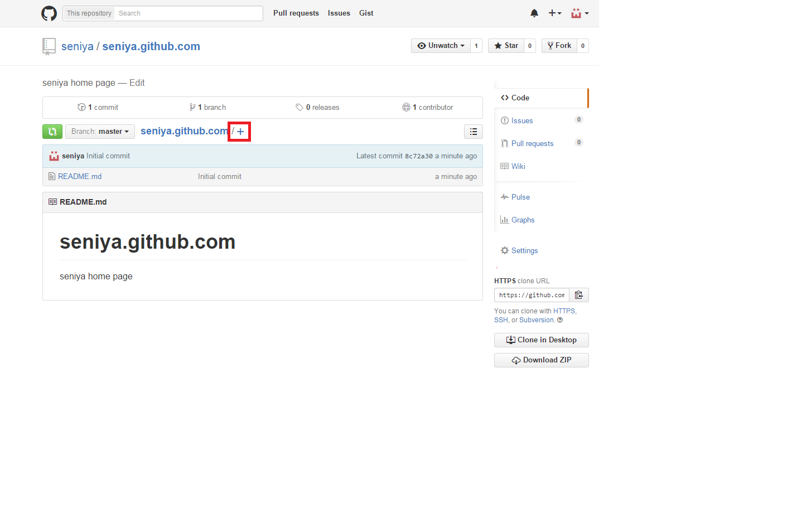
1-4) 파일 생성 화면에서 파일이름을 "index.html" 지정. 파일 내용 작성 후 "Commit new file" 선택
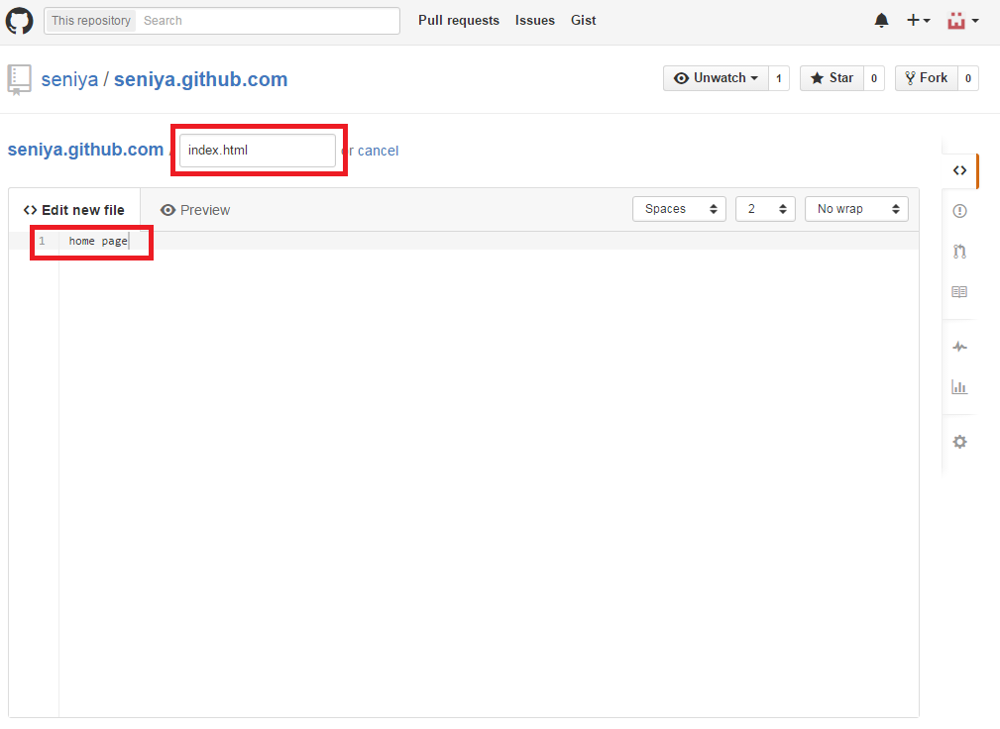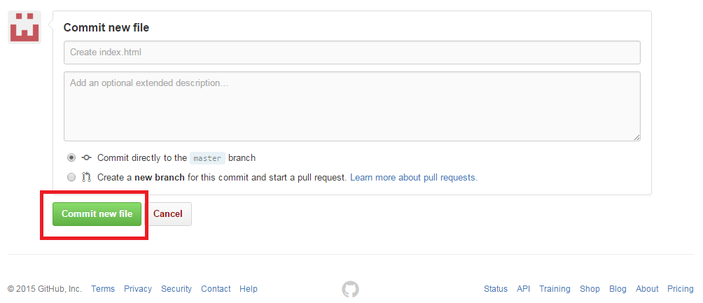
1-5) Repository 화면에서 해당 파일이 정상적으로 생겼는지 확인
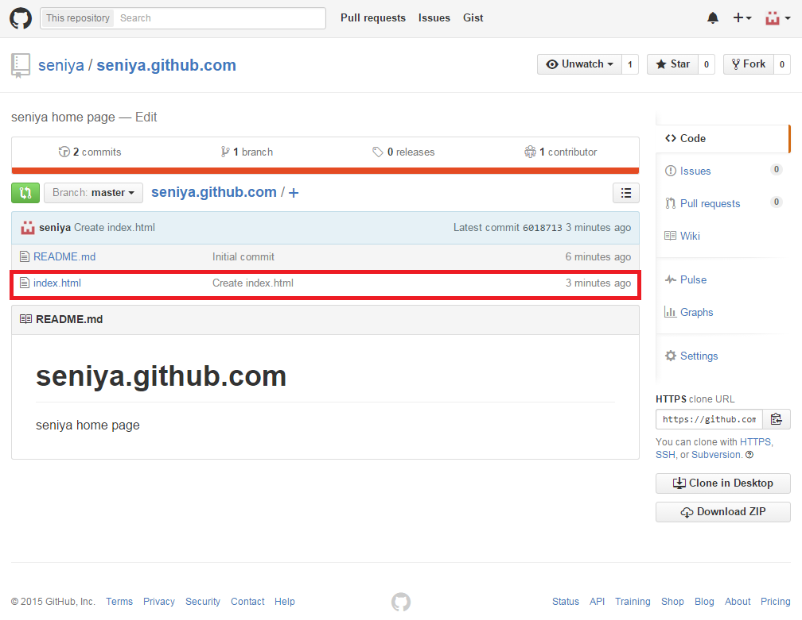
1-6) "[계정이름].github.io" 접속 후 확인(5분정도 소요시간 걸림)
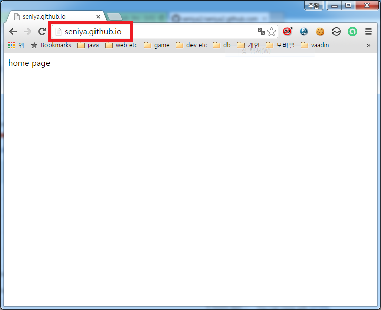
Part 2. GitHub Repository 홈페이지 구축
2-1) GitHub 홈페이지 계정 접속 -> 홈페이지를 작성할 Repository 선택 - 그림 생략
2-2) 선택된 Repository 화면에서 Setting 선택
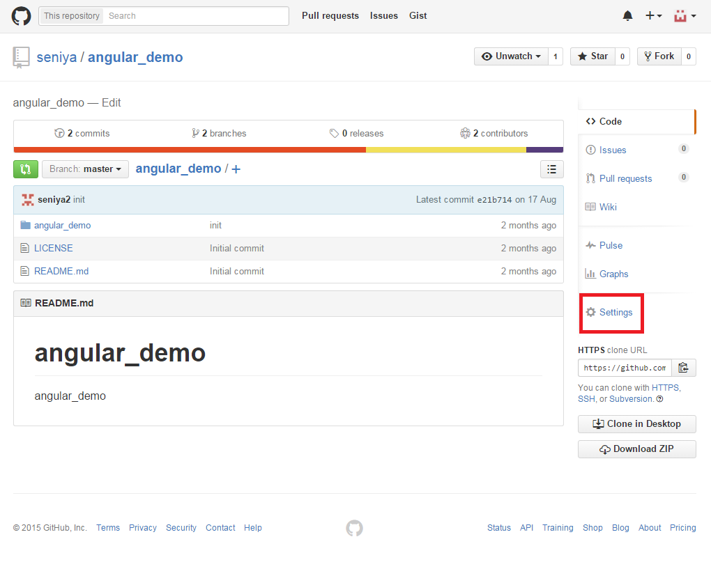
2-3) Setting 화면에서 Launch automatic page generator 선택
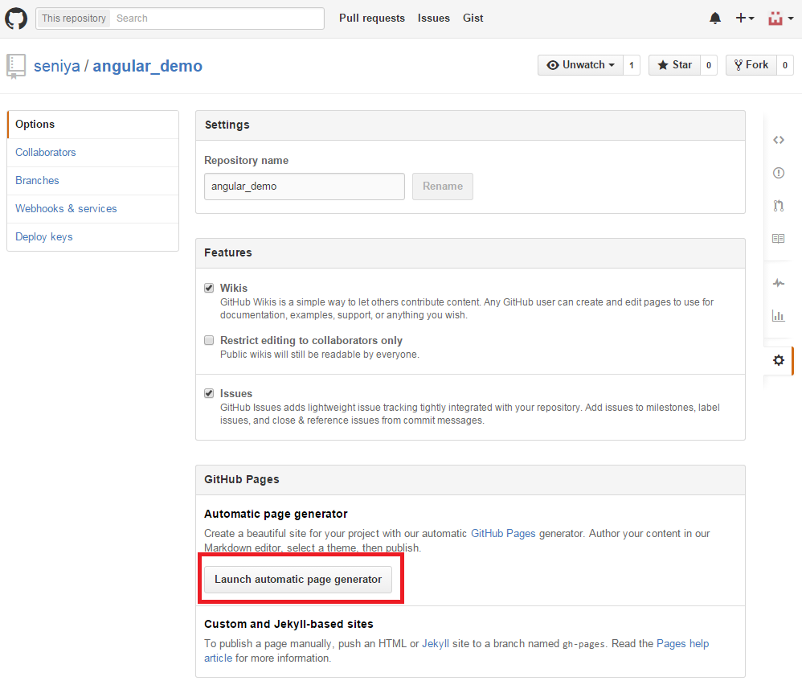
2-4) 홈페이지 관련 내용 작성 후 Continue to layouts 선택
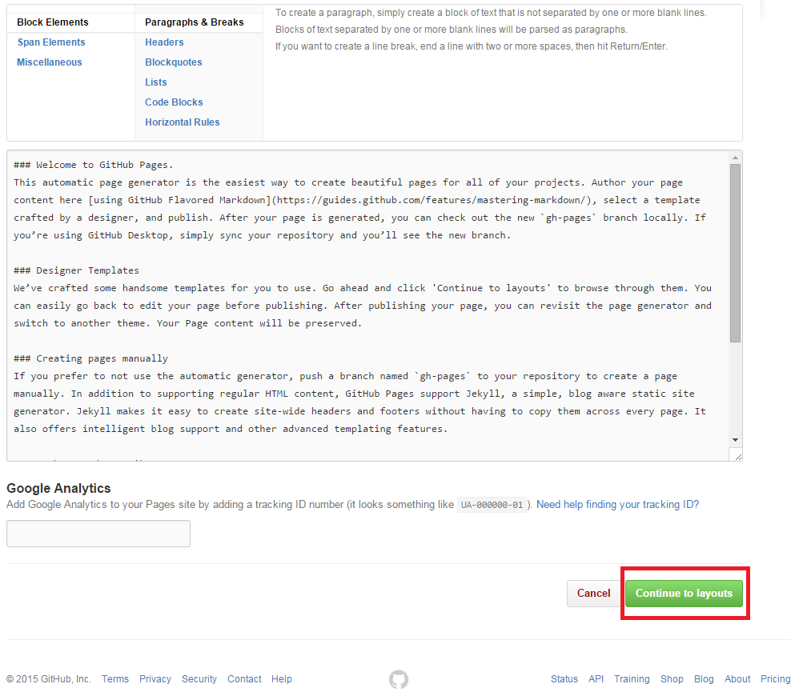
2-5) Layout 선택 후 Publish page 선택
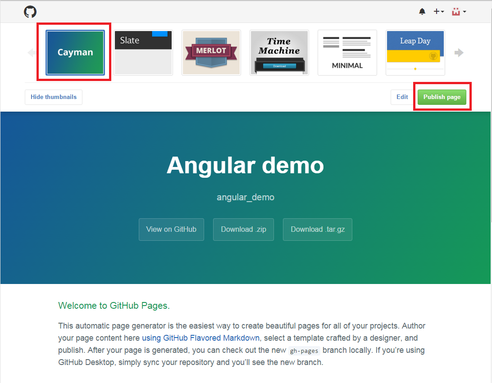
2-6) Repository 화면에서 gh-pages Branch가 추가 되었는지 확인
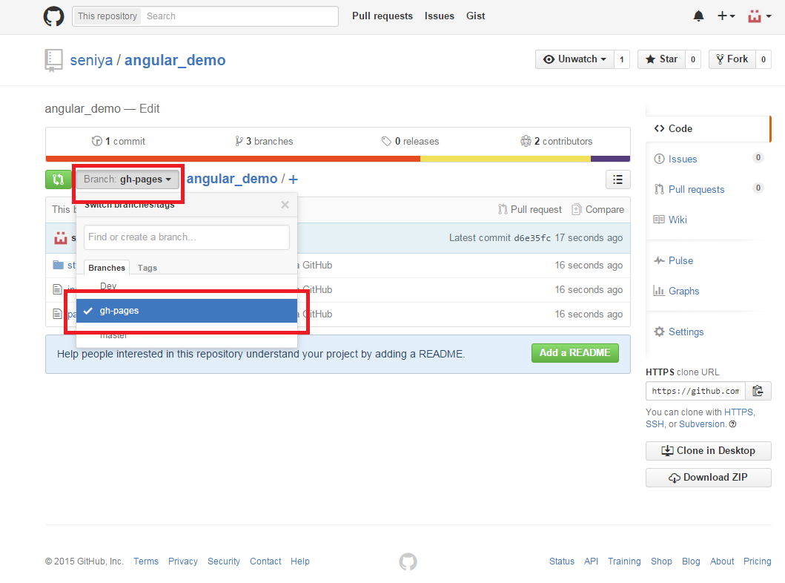
2-7) "[계정이름].github.io/[Repository 이름]" 접속 후 확인(5분정도 소요시간 걸림)
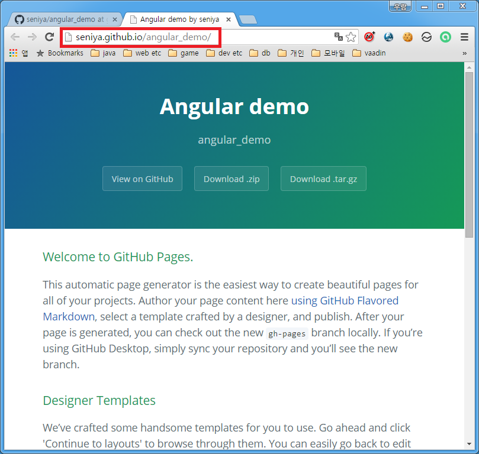